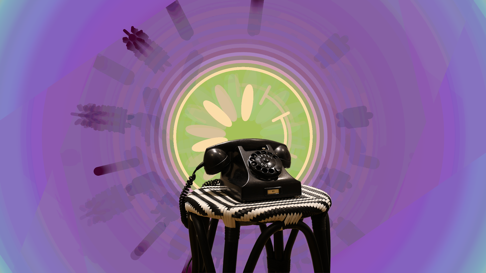
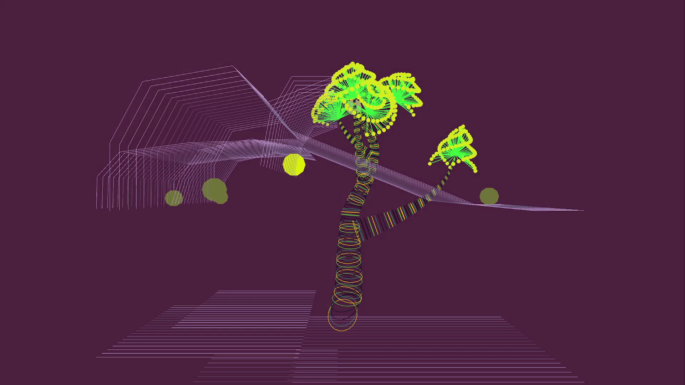
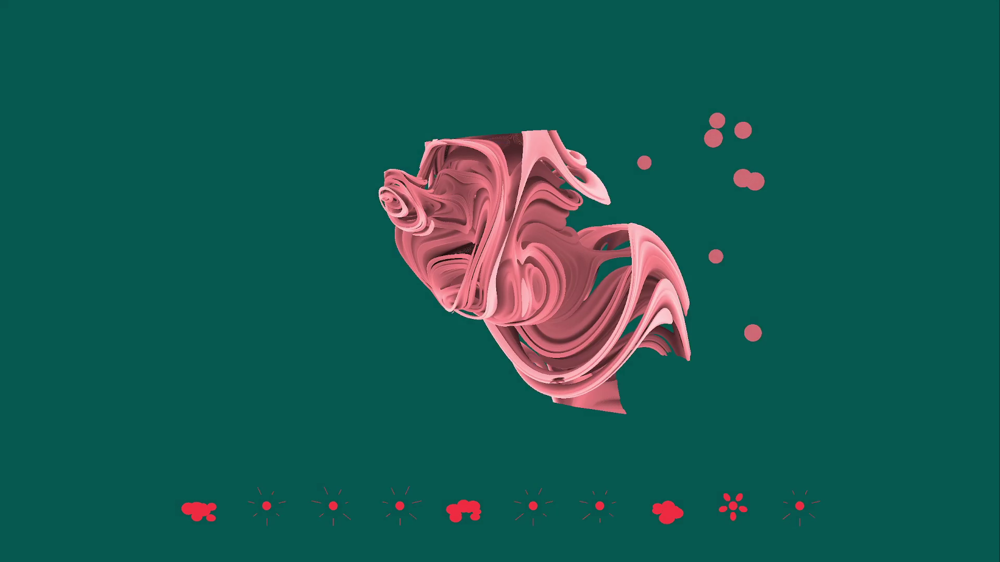
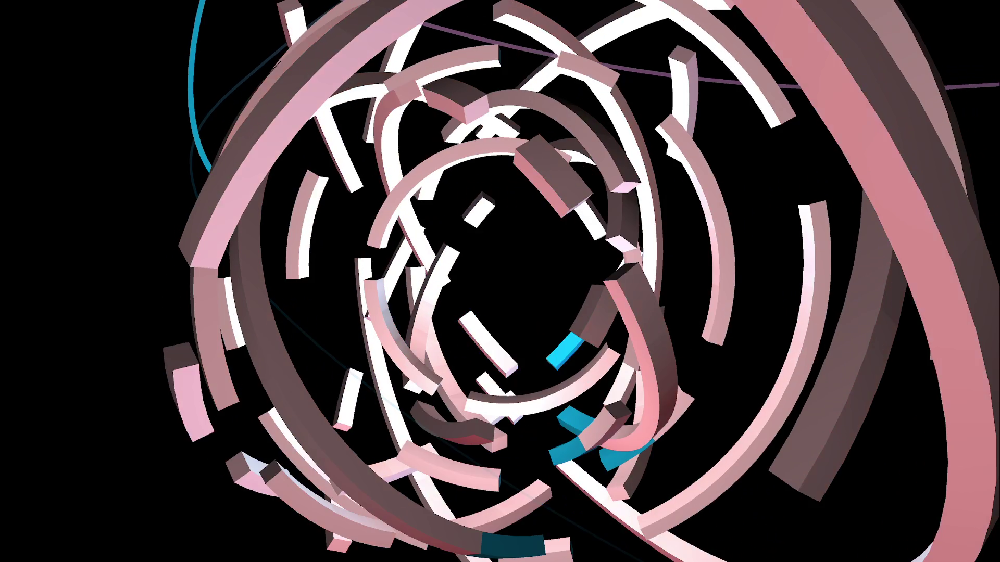

Interactive installations, event organisation
2019-present, Amsterdam

Since the summer of 2019, I have been participating in the organisation of a series of DIY raves in the Amsterdam Forest titled Activités en Forêt.

The events emerged as means to give space for expression to non-proffesional artists from an extensive friendship circle, where they could exhibit their talents in music and visual arts.

As support for the DJ acts, I developed interactive visual installations for different event editions. In the friendly and collaborative spirit of the rave, rather than solely providing one-sided consumer content to the spectators, the installations aimed to involve every participant democratically in the creative process, inviting people to play with familiar and intuitive physical controllers in order to change the appearance of the projected backdrop to the DJ sets.

The behaviour of the moving images was pre-programmed in Processing as a form of an interactive game. An Arduino microcontroller embedded in an old rotary phone, a toy electronic drumkit, a Leap Motion hand gesture sensor or a setup for measuring electrical resistance in fruits offered whimsical interfaces for this game. This way the experience was shifted away from the one-sided observation of a visual performance and towards a true feeling of play and participation.

Check out a video reel of the installations here here (YouTube).